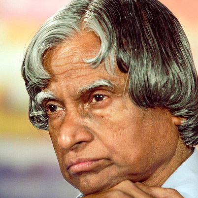

Dr. Avul Pakir Jainulabhudin Adbul Kalam, the twelfth President of India, is rightfully termed as the father of India's missile technology. He was born to parents Jainulabdeen Marakayar and Ashiamma on 15th October, 1931, at Dhanushkodi in Rameshwaram district, Tamil Nadu. Dr. Kalam as an eminent Aeronautical Engineer, contributed for the development of India’s first Satellite launch vehicle SLV-3 and the missiles like the Trishul, Agni, Pritvi etc.
He did his secondary education at Schwartz High School in Ramanathapuram, B.Sc. at St. Joseph's College(1950), Tiruchi, and DMIT in Aeronautical Engineering at the MIT, Madras during 1954-57. After passing out as a graduate aeronautical engineer, Kalam joined Hindustan Aeronautics Limited (HAL), Bangalore as a trainee and later joined as a technical assistant in the Directorate of Technical Development and Production of the Ministry of Defence.
In the 1960's Kalam joined the Vikram Sarabhai Space Centre at Thumba in Kerala. He played a major role in the centre's evolution to a key hub of space research in India, helping to develop the country's first indigenous satellite-launch vehicle. During 1963-82, he served the ISRO in various capacities. In 1982, he rejoined DRDO as Director, and conceived the Integrated Guided Missile Development Programme (IGMDP) for five indigenous missiles. Dr. A.P.J. Abdul Kalam has established an Advanced Technology Research Centre, called 'Research Centre Imarat' to undertake development in futuristic missile technology areas. He also served as the Principal Scientific Adviser to the Defence minister and later the Government of India. After retiring from the post Dr. Kalam joined Annamalai University till he became the President in January 2002.
He is a member of Indian National Academy of Sciences, Astronautical Society of India and many other professional bodies. Dr. APJ abdul Kalam has been awarded Padma Bhushan in 1981, Padma Vibhushan in 1990 and India's Highest civilian Award 'The Bharat Ratna' in 1997. Other prestigious awards include Dr.Biren Roy Space Award, Om Prakash Basin Award for Science and Technology, National Nehru Award, Arya Bhatta Award etc. Dr. Kalam was conferred with the degree of Doctor of Science (D.Sc. Honoris-causa) by twenty eight universities.
Dr. Kalam, a bachelor is a connoisseur of classical Carnatic music. He plays veena in his leisure. He writes poetry in Tamil, his mother tongue. Seventeen of his poems were translated into English and published in 1994 as a book entitled 'My Journey'. He reads the Quran and the Bhagavad Gita with equal devotion. He is also the Author of the books 'India 2020 : A vision for the New Millennium'(1998 with YS Rajan), 'Wings of Fire : an Autobiography' and 'Ignited Minds – unleashing the power within India'.
Totally dedicated to the nation, Dr. Abdul Kalam's vision is to transform India into a developed nation by the year 2020 through hard work and perseverance. He holds a first world dream for the third world nation.
Go to top